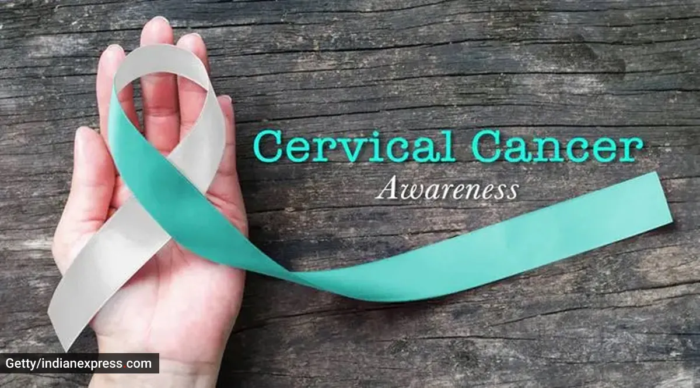

Cervical Cancer: Causes, Symptoms, and Diagnosis
Cervical cancer starts in the cells of the cervix and is often linked to persistent infection with human papillomavirus (HPV). Regular screening with Pap smears and HPV testing can detect precancerous changes early. Vaccination against HPV can help prevent cervical cancer.

More Information
HPV infection is a major risk factor for cervical cancer. Regular screening and vaccination can prevent or detect cancer at an early stage. Women should begin screening at age 21 and continue as recommended by their healthcare provider.
Symptoms
- Abnormal vaginal bleeding
- Pain during intercourse
- Unusual discharge from the vagina
- Pelvic pain
Diagnosis
Diagnosis of cervical cancer typically involves:
- Pelvic exam and Pap smear to detect abnormal cells.
- HPV testing to check for the presence of high-risk HPV types.
- Colposcopy to examine the cervix and obtain biopsy samples.
- Imaging tests such as CT scans or MRIs to determine cancer spread.